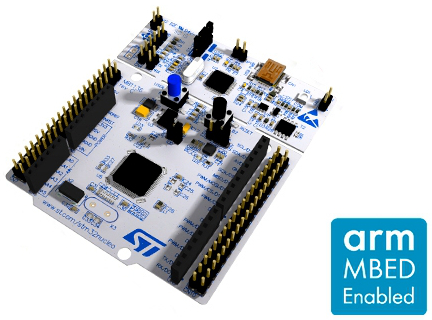
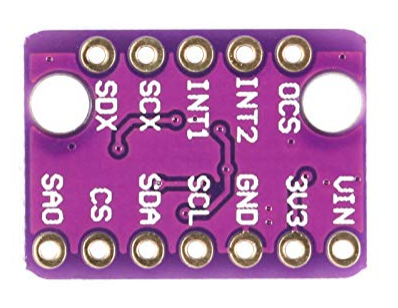
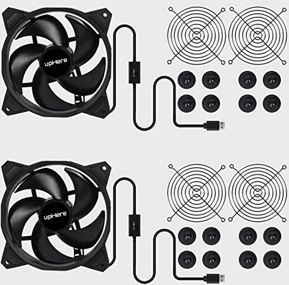
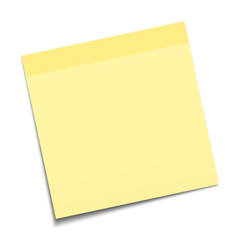

1. AI小课堂¶
1.1. Objectives of the tutorial¶
This project’s goal is to create a device that can be placed directly on a vibrating machine, that will learn its vibration patterns, and detect potential anomalies in its behavior.
This device will integrate and use Cartesiam’s NanoEdge AI Library, which will be selected via NanoEdge AI Studio.
1.1.1. Project constraints¶
The device will be able to:
register the user’s instructions (learn, detect, reset, etc.) detect vibrations learn vibration patterns alert the user when an anomaly is detected
1.2. Requirements¶
1.2.1. Hardware¶
The required hardware for this project are:
- NUCLEO-F401RE
STM32 Nucleo-64 development board with STM32F401RE MCU. https://www.st.com/en/evaluation-tools/nucleo-f401re.html
- BMI160
A small, low power, low noise 16-bit Inertial Measurement Unit (IMU), combining accelerometer and gyroscope. https://www.bosch-sensortec.com/products/motion-sensors/imus/bmi160.html
- USB Fan
upHere U120 Silent Dual 120mm USB PC Fan, rotation speed: 1600rpm ± 10% https://www.amazon.com/upHere-Computer-Cabinet-Playstation-Cooling/dp/B081SYFZZN
- Post-it
A small piece of paper can go a long way! Use it to block your fan. https://www.amazon.fr/Post-Notes-Super-Sticky-47/dp/B00ST46FEY/

1.2.2. Software¶
The required software for this project are:
ARM Mbed OS 5
Offline development with the command-line tool ARM Mbed CLI https://os.mbed.com/docs/mbed-os/v5.15/quick-start/offline-with-mbed-cli.html Version used in the tutorial: 1.10.2
The GNU-RM Embedded Toolchain
https://developer.arm.com/tools-and-software/open-source-software/developer-tools/gnu-toolchain/gnu-rm/downloads Version used in the tutorial: 9-2019-q4-major
Git
Git is a free and open source distributed version control system. https://git-scm.com/
Pygame
Pygame is a set of Python modules designed for writing video games and multimedia programs. https://www.pygame.org/wiki/GettingStarted
NanoEdge AI Studio
Download NanoEdge AI Studio for free by filling out the following form: https://share.hsforms.com/1vVgNZ5JfQAWeJs10Yw6oHQ2a3c9